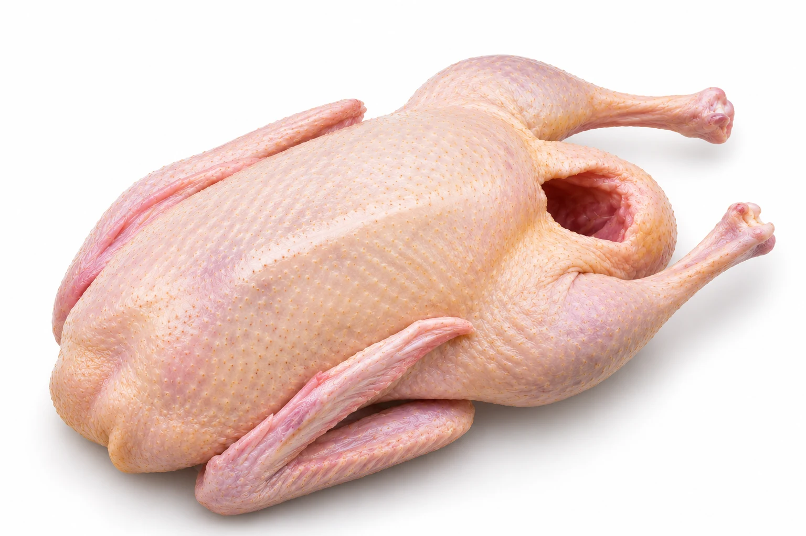

BK AGRO · FARM & NATURAL FOODS
Deshi Chicken
Freshly sourced and carefully prepared at BK Agro.
Shop Now →


Discover fresh farm products, thoughtfully prepared for your family. Explore our collection, choose what you love, and order with ease.
Meet the cattle raised at our Meherpur farm. Explore our livestock and connect directly with our team to learn about availability, care and purchase enquiries.
Enquire on WhatsApp
Our story begins in Meherpur, where we care for cattle and poultry in an open, farm-focused environment. Every day, our team works to maintain thoughtful animal care, clean handling and dependable quality.
From the farm to your family, we believe in making fresh food easier to discover. Browse our products, learn more about our farming practices and place your order with confidence.
Explore Our Farm →Farm-raised quality, fresh products and an easy ordering experience.
Explore our farm collection and select your preferred meat, eggs and other available products.
Check your selected items, adjust quantities and make sure everything is just right.
Enter your delivery details and submit your request. Our team will follow up to confirm availability and next steps.